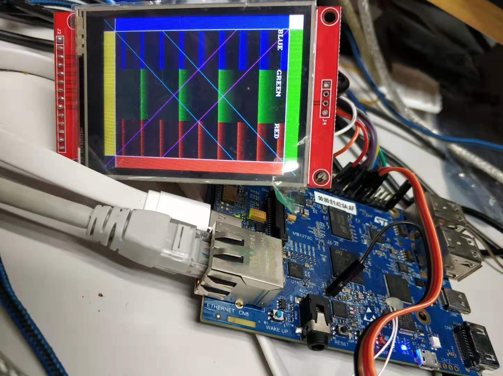

配置
跟之前用fbtft驱动st7735r一样，先用make menuconfig配置内核，添加fbtft。然后修改设备树，同样是在设备树spi5下添加：
ili9341@0{
compatible = "adafruit,yx240qv29", "ilitek,ili9341";
reg = <0>;
spi-max-frequency = <32000000>;
buswidth=<8>;
dc-gpios = <&gpiof 3 GPIO_ACTIVE_HIGH>;
reset-gpios = <&gpiod 13 GPIO_ACTIVE_HIGH>;
rotation = <270>;
bgr;
};
编译，更新板子上的内核跟设备树，启动，屏由白变黑，说明驱动应该是没问题的，看下启动信息中跟fb有关的部分：
root@stm32mp1:~# dmesg | grep "fb"
[ 2.091619] fbtft_of_value: buswidth = 8
[ 2.416500] graphics fb0: fb_ili9341 frame buffer, 240x320, 150 KiB video memory, 16 KiB buffer memory, fps=20, spi0.0 at 32 MHz
可以看到LCD的相关信息。
简单测试
配置一下，开机的时候显示Linux Logo:
显示随机数：
系统自带工具
在测试过程中，无意中发现系统中自带了framebuffer测试工具：
- 使用fb-test测试

结果如下：

这个工具可以用来测试LCD驱动正不正常
- 使用fb-rect
运行该命令后，LCD上一直都在显示不同尺寸不同颜色的方块：

- 使用fb-perf
运行结果如下：

littlevgl
littlevgl是一个开源的嵌入式GUI库，详细信息查看官网：https://littlevgl.com/。
littlevgl支持Linux，工程地址为：https://github.com/littlevgl/lv_linux_frame_buffer
首先下载下来：
git clone --recursive https://github.com/littlevgl/lv_linux_frame_buffer.git
下载下来后，先修改lv_conf.h，以下3个参数需要跟所用LCD一样：
在文件lv_drv_conf.h中，确认程序中所用设备是否为所用设备对应的fb设备，如下图，程序中默认是用fb0，如果不是fb0，需要做相应修改：
然后直接输入make，编译，编译的部分信息如下：
编译完成后把编译出来的可执行文件demo拷贝到STM32MP157c的板子上，并运行结果如下：